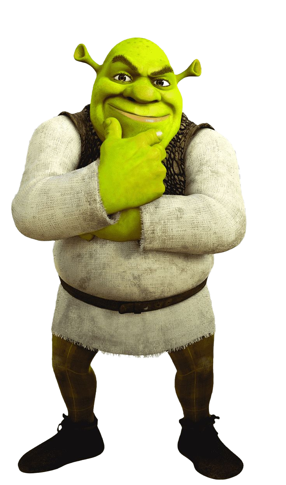

О фильме
«Шрек» — анимационный комедийный фильм о зелёном огре Шреке, который живёт в одиночестве в болоте. Его покой нарушает нашествие сказочных персонажей, и вместе с болтливым осликом Шрек отправляется спасать принцессу Фиону, сталкиваясь с приключениями, юмором и неожиданной дружбой.